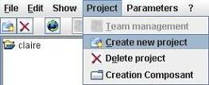
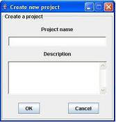

Create a project
Pre-necessary: Have the right of creation in a project provided by the administrator
In menu « Project », choose menu « Create new project »

Indicate project's name, project's description is optional

Click on « Ok »